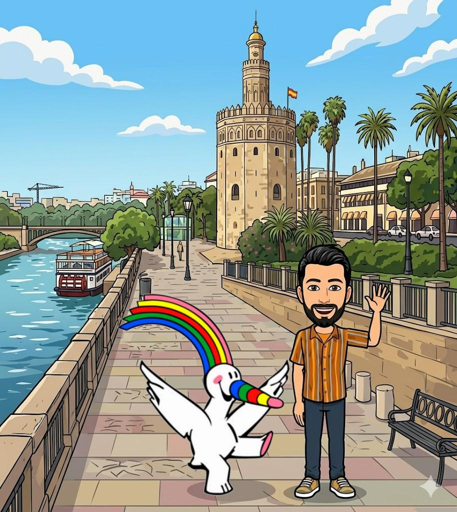
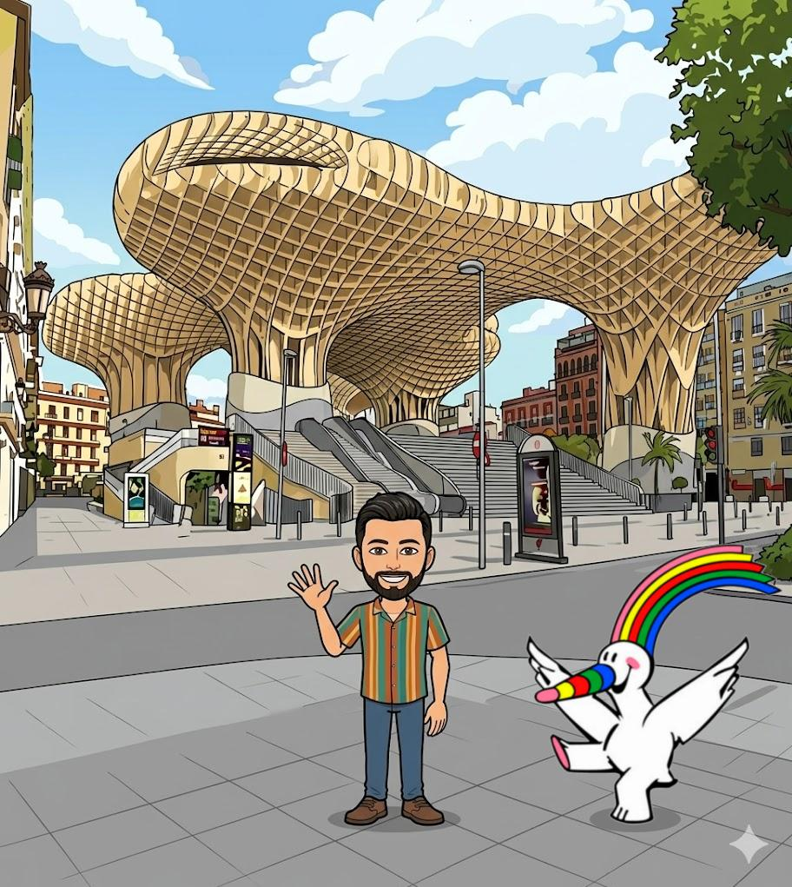
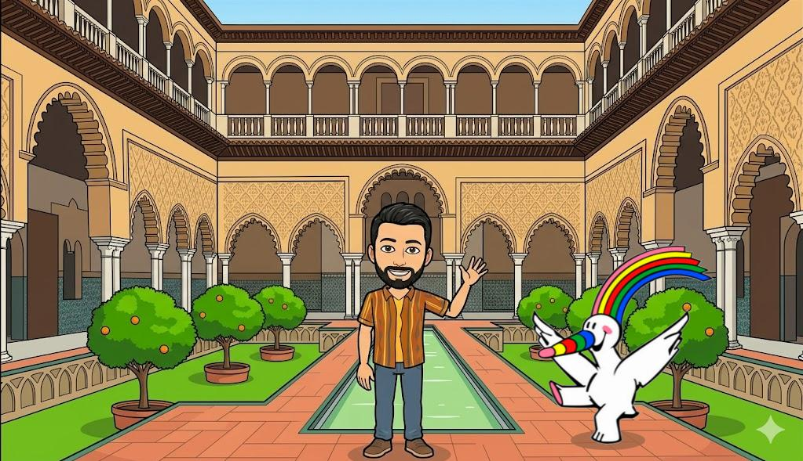

Un extraño crimen contra el patrimonio de Sevilla...
Sevilla está conmocionada. Al más puro estilo de la novela "El asesinato de la regañá", un misterioso bromista arlequín está alterando los monumentos más icónicos de la ciudad. No deja notas tradicionales; sustituye los azulejos por **mosaicos con operaciones de fracciones** incompletas.
Curro y vuestro profesor de matemáticas necesitan vuestra ayuda. En cada monumento deberéis rellenar los huecos del mosaico expresando las fracciones del enunciado simplificadas y, finalmente, calcular los huecos de la fracción resultante.
Al final, en el gran candado, se os pedirá una contraseña numérica basada en los numeradores y denominadores descubiertos. ¡A por ellos!
Elige la dificultad:
Mosaico 1: En lo alto de la Giralda
Curro sube a la Giralda. El azulejo vandalizado contiene este problema de Suma con igual denominador:
"Para restaurar el campanario se usan dos planchas. La primera cubre 3/7 de la pared y la segunda cubre 11/7. ¿Qué fracción total de la pared se ha cubierto?"
Completa el mosaico matemático del monumento (simplifica si es posible):
+
=
Mosaico 2: El Secreto de la Torre del Oro

El profesor examina la base de la Torre del Oro. Aquí el problema es una Resta con igual denominador:
"En un barril defensivo había 19/5 de litros de aceite. Los guardias gastaron 4/5 de litro. ¿Qué fracción de litros queda?"
-
=
Mosaico 3: Los Arcos del Puente de Triana
Bajo los arcos de hierro aparece una Suma con distinto denominador:
"Un herrero une dos vigas para asegurar el puente. La primera mide 7/2 de metro y la segunda mide 5/4 de metro. ¿Cuál es la longitud total combinada?"
+
=
Mosaico 4: Las Palomas de la Plaza de América
Junto a las palomas, descubrís una Resta con diferente denominador:
"En los estanques había 5/3 de sacos de pienso. Las aves se comieron 1/2 saco. ¿Qué fracción de saco queda?"
-
=
Mosaico 5: El Banco de Sevilla en Plaza de España
Escondido en los bancos cerámicos, halláis una Multiplicación de fracciones (recuerda que un número entero tiene denominador 1):
"Un artesano tarda 4/5 de hora en pintar un azulejo. Si le encargan una colección de 10 azulejos iguales, ¿cuántas horas (expresado en fracción) necesitará?"
×
=
Mosaico 6: En el mirador de Metropol Parasol

Arriba en las Setas, el peligroso Arlequín os reta con una División de fracciones:
"Se quieren repartir 12/3 de kilo de dulces en paquetes pequeños que contienen exactamente 2/3 de kilo cada uno. ¿Qué fracción de paquetes resultará?"
÷
=
Mosaico 7: El Enigma Final del Real Alcázar

¡Último esfuerzo! El laberinto electrónico se abrirá si completáis esta Operación Combinada:
"Calcula paso a paso el resultado de la siguiente operación combinada de fracciones: ( 1/2 + 5/2 ) × 3/1 - 4/1"
(
+
)
×
-
=
🔓 El Candado Digital del Arlequín
Para desactivar la bomba de humo del criminal, debéis introducir la contraseña secreta. Esta contraseña se calcula sumando absolutamente todos los números resultantes (Numeradores y Denominadores) que introdujisteis en los cuadros amarillos de respuesta final.
HUECOS DE LAS FRACCIONES RESULTANTES DE LAS OPERACIONES:
Monumento / Operación
Numerador Resultante
Denominador Resultante
1. La Giralda (Suma)
2. Torre del Oro (Resta)
3. Puente de Triana (Suma m.c.m)
4. Parque María Luisa (Resta m.c.m)
5. Plaza de España (Multiplicación)
6. Las Setas (División)
7. Real Alcázar (Combinada)
Suma de todos los Numeradores finales + todos los Denominadores finales:
¡CASO CERRADO! 🎉 Sevilla está a salvo
¡El candado digital cede! Vuestro dominio absoluto de los numeradores, denominadores, mínimos comunes múltiplos y la jerarquía de operaciones de 1º de la ESO ha neutralizado por completo al criminal.
Curro y vuestro profesor os felicitan: ¡Sois los mejores inspectores matemáticos de la ciudad!
❌ INVESTIGACIÓN BLOQUEADA
El código es incorrecto o el tiempo ha expirado. El criminal ha huido y los mosaicos siguen dañados.
¡No os rindáis! Revisad bien que todas las fracciones del enunciado estén correctamente colocadas y que los cálculos de los numeradores y denominadores resultantes estén perfectamente simplificados.